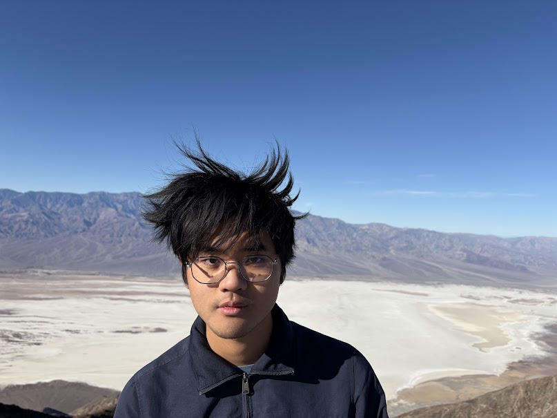

Welcome to my personal website. Thanks for stopping by!
I'm an undergraduate at the University of North Carolina at Chapel Hill, majoring in Math and Computer Science.
I'm an undergraduate researcher in MURGe-Lab, UNC's NLP lab, and I'm grateful to be mentored by Prof. Shrawan Kumar.
I'm interested in math (particularly topology) and artificial intelligence. Outside of that, I enjoy distance running, playing card/strategy games with friends and family, and playing Clash of Clans.
You can find me on GitHub and LinkedIn.
Email: vincent dot an dot wang [at] gmail dot com